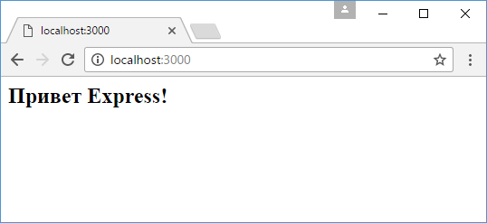

Начало работы с Express
В этой главе мы рассмотрим создание сервера с помощью
фреймворка Express. Казалось бы, зачем нам нужен дополнительный фреймворк, если
мы можем воспользоваться готовым модулем http, который есть в Node.js API.
Однако Express сам использует модуль http, но вместе с тем предоставляет ряд
готовых абстракций, которые упрощают создание сервера и серверной логики, в
частности, обработка отправленных форм, работа с куками, CORS и т.д.
Исходный код фреймворка можно посмотреть в репозитории на гитхабе по адресу
https://github.com/expressjs/express.
Express - модуль, поэтому его
необходимо установить через консоль: npm install
express
Создадим в каталоге проекта новый файл app.js:
//
подключение express
const express = require("express");
// создаем
объект приложения
const app = express();
// определяем обработчик для
маршрута "/"
app.get("/", function(request, response){
// отправляем
ответ
response.send("Привет Express!");
});
// начинаем прослушивать
подключения на 3000 порту
app.listen(3000);
Для использования Express в начале надо создать объект, который будет представлять приложение:const app = express();
Для обработки запросов в Express определено ряд встроенных функций, и одной из таких является функция app.get(). Она обрабатывает GET-запросы протокола HTTP и позволяет связать маршруты с определенными обработчиками. Для этого первым параметром передается маршрут, а вторым - обработчик, который будет вызываться, если запрос к серверу соответствует данному маршруту:
app.get("/",
function(request, response){
// отправляем
ответ
response.send("Привет Express!");
});
Маршрут "/" представляет корневой маршрут. Для запуска сервера вызывается метод app.listen(), в который передается номер порта. Запустим проект и обратимся в браузере по адресу http://localhost:3000/:

И что важно, Express опирается на систему маршрутов, поэтому все другие запросы, которые не соответствуют корневому маршруту "/", не будут обрабатываться:

Назад: получение данных от клиента стр.2 | Далее: Отправка ответа
веб фреймворк который упрощет создание сервера и серверной логики, в частности, обработка отправленных форм, работа с куками, CORS и т.д.
ставки
фреймворк для работы с JSON
Post
Delete
Remove